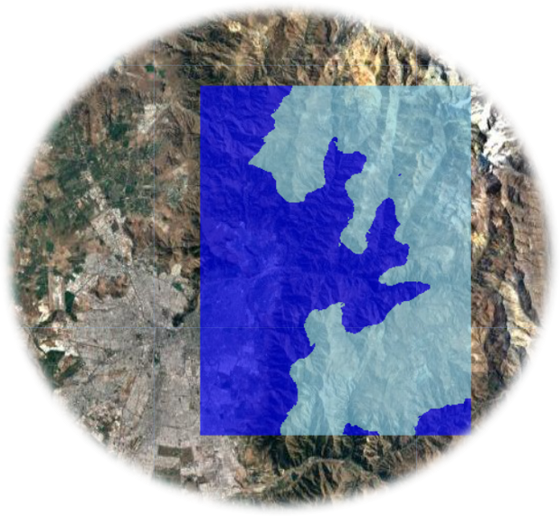

SnowCovApp

Version 1.1 (2022-08-26)
Author: Andrés Salazar (ajsalazar@uc.cl)
Click here to access to SnowCovApp
(English description below)
Español
1) Introducción al problema
Más del 25% de la población mundial depende del deshielo de las montañas para el suministro de agua dulce (Mankin et al., 2015). Además, la nieve es una variable hidrológica esencial que afecta a la producción de escorrentía, la recarga de los manantiales y la disponibilidad de agua en los entornos de montaña (por ejemplo, Lucianetti et al., 2020; Penna et al., 2016).
Los procesos climáticos, hidrológicos y biogeoquímicos globales dependen en gran medida de la cobertura de nieve estacional (Takala et al., 2011). La gestión informada de los ecosistemas requiere comprender la extensión de la cubierta de nieve estacional, ya que influye en una serie de servicios de los ecosistemas, como el suministro de recursos hídricos, la disponibilidad de hábitat para las especies silvestres y el uso recreativo del paisaje por parte de los seres humanos.
En un clima cambiante, el momento y la extensión de la cubierta de nieve estacional son inciertos, y la cartografía precisa de la cubierta de nieve es cada vez más importante para entender la dinámica de la nieve (Berman et al., 2018; Corbari et al., 2022).
El acceso a esta información es ahora más fácil que antes. Sin embargo, todavía necesitamos una plataforma más eficiente y fácil de usar para extraer esta información. El objetivo de SnowCovApp es cubrir este problema, siendo una plataforma online gratuita y fácil de usar.
2) Introducción a SnowCovApp
SnowCovApp es una aplicación web construida en la plataforma Google Earth Engine combinando los lenguajes JavaScript y CSS. SnowCovApp genera datos diarios del área de cobertura de nieve (en hectáreas y porcentaje) con cobertura mundial.
Esta aplicación utiliza el producto MODIS “MOD10A1 Terra Snow Cover Daily Global 500m” Este producto contiene datos diarios desde el 2000-02-24 hasta la fecha actual (con un retraso de aproximadamente 1 semana).
3) Metodología
Utilizando el producto MOD10A1 en la plataforma Google Earth Engine, se calculó el área de cobertura de nieve fraccionada (fSCA). Para ello, se aplicó la metodología de Rittger et al. (2012). Luego, los valores de fSCA se transformaron en área de cobertura de nieve binaria (bSCA). Para ello se estableció un umbral de 0.5, lo que significa que si un píxel está cubierto por un 50% (o más) de nieve, se clasifica como nieve. Si no se cumple la condición anterior, se considera que no hay nieve. De este modo, se obtiene una clasificación binaria, con clases de nieve y no nieve. Después, para la zona de interés, se calcula la superficie cubierta de nieve (en hectáreas) y el porcentaje de la superficie de interés que está cubierta de nieve.
4) Región de interés de la comunidad
Las personas que estén interesadas en estudiar una región determinada pueden enviar un shapefile de esta. Este shapefile se añadirá a la sección “choose a community ROI.” El shapefile debe enviarse por correo electrónico a ajsalazar@uc.cl con una breve descripción de la zona.
5) Fortalezas de SnowCovApp
Velocidad de procesamiento: Como SnowCovApp fue creada usando Google Earth Engine, la potencia de esta plataforma (la cual funciona con los servidores de Google) es una gran ventaja en el procesamiento de estos datos.
Amplia cobertura temporal: Los datos están disponibles desde 2000-02-24 a la fecha actual (con un retraso de una semana aproximadamente).
Cobertura mundial: SnowCovApp puede ser usada prácticamente en cualquier lugar del mundo.
Fácil uso: el manejo de esta aplicación es bastante simple, ya que básicamente consiste en dos pasos: selccionar el área de estudio y la fecha de interés.
No hay necesidad de crear cuenta en Google Earth Engine: para usar SnowCovApp no es necesario tener una cuenta en Google Earth Engine, por lo que cualquier persona puede usarla.
No es necesario descargar un software: esta aplicación funciona en la web, por lo que no es necesario descargar ningún software.
Se pueden descargar los datos en formato CSV: la gran cantidad de datos generadas en SnowCovApp pueden ser descargados directamente en un archivo CSV.
6) Limitaciones de SnowCovApp
Cobertura de nubes: como la mayoría de los usos de imágenes de satelite, la presencia de nubes es un problema. Estudios similares de cobertura de nieve, clasifican los datos contaminados con nubes como datos perdidos. SnowCovApp también tiene este problema, por lo que el valor real de SCA es una aproximación de la realidad. Futuros estudios se deben realizar para poder llenar los pixeles contaminados con nubes.
Periodo de estudio: El producto utilizado (MOD10A1) contiene datos diarios desde el 2000-02-24 hasta la fecha actual (con un desfase de aproximadamente 2 semanas). En la sección “Study period charts: Daily SCA (hectares and percentage)” sólo se pueden descargar datos diarios de aproximadamente 13 años. Si desea descargar una serie temporal más larga, puede hacer la extracción en dos partes. Esto es debido a que Google Earth Engine tiene un límite en el procesamiento de estos datos.
Tamaño del área de estudio: es probable que si se introduce un área de estudio muy grande (países completos por ejemplo) en SnowCovApp, algunos datos no puedan generarse. Esto es debido a que esos gráficos analizan una gran cantidad de datos y Google Earth Engine tiene un límite en el procesamiento de estos datos.
7) Referencias
Aalstad, K., Westermann, S., & Bertino, L. (2020). Evaluating satellite retrieved fractional snow-covered area at a high-Arctic site using terrestrial photography. Remote Sensing of Environment, 239(December 2019), 111618. https://doi.org/10.1016/j.rse.2019.111618
Berman, E.E., Bolton, D.K., Coops, N.C., Mityok, Z.K., Stenhouse, G.B., Moore, R.D., 2018. Daily estimates of Landsat fractional snow cover driven by MODIS and dynamic time-warping. Rem. Sens. Environ. 216, 635–646.
Corbari, C., Ravazzani, G., Perotto, A., Lanzingher, G., Lombardi, G., Quadrio, M., Mancini, M., Salerno, R., 2022. Weekly monitoring and forecasting of hydropower production coupling meteo-hydrological modeling with ground and satellite data in the Italian Alps. Hydrology 9 (2), 29. https://doi.org/10.3390/hydrology9020029.
Lucianetti, G., Penna, D., Mastrorillo, L., Mazza, R., 2020. The role of snowmelt on the spatio-temporal variability of spring recharge in a Dolomitic mountain group, Italian Alps. Water 12, 2256. https://doi.org/10.3390/w12082256.
Mankin, J.S., Viviroli, D., Singh, D., Hoekstra, A.Y., Diffenbaugh, N.S., 2015. The po- tential for snow to supply human water demand in the present and future. Environ. Res. Lett. 10. https://doi.org/10.1088/1748-9326/10/11/114016.
Penna, D., van Meerveld, H.J., Zuecco, G., Dalla Fontana, G., Borga, M., 2016. Hydrological response of an Alpine catchment to rainfall and snowmelt events. J. Hydrol. 537, 382–397. https://doi.org/10.1016/j.jhydrol.2016.03.040.
Rittger, K., Painter, T. H., & Dozier, J. (2013). Assessment of methods for mapping snow cover from MODIS. Advances in Water Resources, 51, 367–380. https://doi.org/10.1016/j.advwatres.2012.03.002
Takala, M., Luojus, K., Pulliainen, J., Derksen, C., Lemmetyinen, J., Karna, J.P., Bojkov, B., 2011. Estimating northern hemisphere snow water equivalent for climate research through assimilation of space-borne radiometer data and ground-based measurements. Rem. Sens. Environ. 115 (12), 3517–3529.
Vaglio, G., Francini, S., Penna, D., Zuecco, G., Chirici, G., Berman, E., Coops, N. C., Castelli, G., Bresci, E., Preti, F., & Valentini, R. (2022). SnowWarp : An open science and open data tool for daily monitoring of snow dynamics. Environmental Modelling and Software, 156(July), 105477. https://doi.org/10.1016/j.envsoft.2022.105477
English
1) Introduction to the problem
More than 25% of the worlds population relies on mountain snowmelt for fresh water supply (Mankin et al., 2015). Also, snow is an essential hydrological variable affecting runoff production, spring recharge, and water availability in mountain environments (e.g., Lucianetti et al., 2020; Penna et al., 2016).
Global climatic, hydrological, and biogeochemical processes are highly dependent on seasonal snow cover (Takala et al., 2011). Informed ecosystem management requires understanding the extent of seasonal snow cover, as it impacts a range of ecosystem services, including water resources provisioning, habitat availability for wildlife species, and human recreational use of the landscape.
Under a changing climate, the timing and extent of seasonal snow cover are uncertain, and accurate snow cover mapping is increasingly important to understand snow dynamics (Berman et al., 2018; Corbari et al., 2022).
The acces to this information is now easier than before. However, we still need a more efficient easy to use platform to extract this information. The goal of SnowCovApp is to fill this problem, being a free easy to use online platform.
2) Introduction to SnowCovApp
SnowCovApp is a web app constructed on Google Earth Engine platform combinig JavaScript and CSS languages. SnowCovApp generates daily Snow Cover Area data (in hectares and percentage) with world cover.
This app uses the MODIS product “MOD10A1 Terra Snow Cover Daily Global 500m.” This product contains daily data from 2000-02-24 to the current date (with a lag of approximately 1 week).
3) Methodology
Using the product MOD10A1 in Google Earth Engine platfform, the fractional Snow Cover Area (fSCA) was calculated. This was done by applying the Rittger et al. (2012) methodology. Then, the fSCA values were transformed to binary Snow Cover Area (bSCA). This was done by setting a threshold of 0.5, which means that if a pixel is covered by 50% (or more) of snow, it is classified as snow. If the above condition is not met, it is considered as no-snow. In this way, a binary classification is obtained, with snow and no-snow classes. Then, for the area of interest, the area covered by snow (in hectares) and the percentage of the area of interest that is covered by snow are calculated.
4) Community region of interest
People who are interested in study a certain region can send a shapefile of it. This shapefile will be add to the section “choose a community ROI”. The shapefile needs to be sent by email to ajsalazar@uc.cl with a short description of the area.
5) SnowCovApp strengths
Processing speed: As SnowCovApp was created using Google Earth Engine, the power of this platform (which runs on Google’s servers) is a great advantage in processing this data.
Wide temporal coverage: Data are available from 2000-02-24 to the current date (with a lag of approximately one week).
Worldwide coverage: SnowCovApp can be used virtually anywhere in the world.
Easy to use: the handling of this application is quite simple, since it basically consists of two steps: select the area of study and the date of interest.
No need to create a Google Earth Engine account: to use SnowCovApp you don’t need to have a Google Earth Engine account, so anyone can use it.
No software download required: this application runs on the web, so no software download is required.
Data can be downloaded in CSV format: the large amount of data generated in SnowCovApp can be downloaded directly to a CSV file.
6) SnowCovApp Limitations
Cloud cover: like most uses of satellite imagery, the presence of clouds is a problem. Similar studies of snow cover classify cloud contaminated data as missing data. SnowCovApp also has this problem, so the actual SCA value is an approximation of reality. Future studies should be performed in order to fill the cloud contaminated pixels.
Study period: The product used (MOD10A1) contains daily data from 2000-02-24 to the current date (with a lag of approximately 1 week). In the section “Study period charts: Daily SCA (hectares and percentage)” only approximately 13 years of daily data can be downloaded. If you want to download a longer time series, you can do the extraction in two parts. This is because Google Earth Engine has a limit on the processing of this data.
Study area size: it is likely that if a very large study area (whole countries for example) is used in SnowCovApp, some data may not be generated. This is because these charts analyze a large amount of data and Google Earth Engine has a limit in processing this data.
7) References
Aalstad, K., Westermann, S., & Bertino, L. (2020). Evaluating satellite retrieved fractional snow-covered area at a high-Arctic site using terrestrial photography. Remote Sensing of Environment, 239(December 2019), 111618. https://doi.org/10.1016/j.rse.2019.111618
Berman, E.E., Bolton, D.K., Coops, N.C., Mityok, Z.K., Stenhouse, G.B., Moore, R.D., 2018. Daily estimates of Landsat fractional snow cover driven by MODIS and dynamic time-warping. Rem. Sens. Environ. 216, 635–646.
Corbari, C., Ravazzani, G., Perotto, A., Lanzingher, G., Lombardi, G., Quadrio, M., Mancini, M., Salerno, R., 2022. Weekly monitoring and forecasting of hydropower production coupling meteo-hydrological modeling with ground and satellite data in the Italian Alps. Hydrology 9 (2), 29. https://doi.org/10.3390/hydrology9020029.
Lucianetti, G., Penna, D., Mastrorillo, L., Mazza, R., 2020. The role of snowmelt on the spatio-temporal variability of spring recharge in a Dolomitic mountain group, Italian Alps. Water 12, 2256. https://doi.org/10.3390/w12082256.
Mankin, J.S., Viviroli, D., Singh, D., Hoekstra, A.Y., Diffenbaugh, N.S., 2015. The po- tential for snow to supply human water demand in the present and future. Environ. Res. Lett. 10. https://doi.org/10.1088/1748-9326/10/11/114016.
Penna, D., van Meerveld, H.J., Zuecco, G., Dalla Fontana, G., Borga, M., 2016. Hydrological response of an Alpine catchment to rainfall and snowmelt events. J. Hydrol. 537, 382–397. https://doi.org/10.1016/j.jhydrol.2016.03.040.
Rittger, K., Painter, T. H., & Dozier, J. (2013). Assessment of methods for mapping snow cover from MODIS. Advances in Water Resources, 51, 367–380. https://doi.org/10.1016/j.advwatres.2012.03.002
Takala, M., Luojus, K., Pulliainen, J., Derksen, C., Lemmetyinen, J., Karna, J.P., Bojkov, B., 2011. Estimating northern hemisphere snow water equivalent for climate research through assimilation of space-borne radiometer data and ground-based measurements. Rem. Sens. Environ. 115 (12), 3517–3529.
Vaglio, G., Francini, S., Penna, D., Zuecco, G., Chirici, G., Berman, E., Coops, N. C., Castelli, G., Bresci, E., Preti, F., & Valentini, R. (2022). SnowWarp : An open science and open data tool for daily monitoring of snow dynamics. Environmental Modelling and Software, 156(July), 105477. https://doi.org/10.1016/j.envsoft.2022.105477